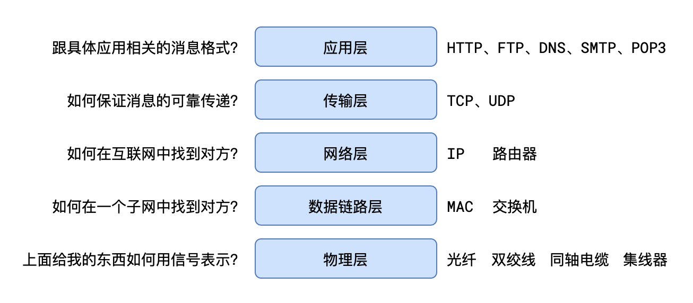
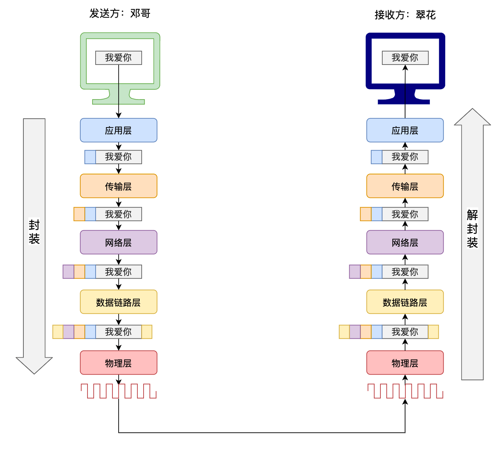

TCP 收发数据流程
TCP 如何收发数据
收发数据可以是几秒钟也可以是几天
收发数据可以是服务器给客户端发数据，也可以是客户端给服务器发数据
在 tcp 协议下，可以在任何方向，任何时间，任何方式来发送数据
分段发送
编号规则：按字节编号
分段发送，每段会加一个头，分段发送的好处就是当有些数据错误的时候只需要重发一小段就可以
1kb = 1024byte
1byte = 8bit
bit 里面存放的就是 0 和 1
每段都要加数据头
可靠传输
在 TCP 协议中，任何时候、任何一方都可以主动发送数据给另一方
为了解决数据报丢失、数据报错乱等问题，TCP 协议要求：接收方收到数据报后，必须对数据报进行确认！
数据报：一个传输单元，分段发送的一个段
- seq：表示这次数据报的序号（序号会保存在数据报的头部，序号表示发送的起始字节，比如发送第一块数据和第二块数据，那么序列号就是 1）
- ACK：表示这次数据报是一个确认数据报
- ack：表示期望下一次接收的数据报序号
发送方如果长时间没有收到确认数据报（ACK=1），则会判定丢失或者是错误，然后重发(只要没确认，就会一直重发)
发送的时候 ACK=0（比如上图其实是 seq=x,ACK=0）
发送的 seq=x，然后接收方说 ack=1，确认无误，请再给我发 seq=x+1 的数据
以上说的 seq,ACK,ack 都在数据报的头内
连接的建立（三次握手）
TCP 协议要实现数据的收发，必须要先建立连接
连接的本质其实就是双方各自开辟的一块儿内存空间，空间中主要是数据缓冲区和一些变量
连接建立的过程需要经过三次数据报传输，因此称之为三次握手
开始
客户端：我说话能听见吗？
服务器：能听见，我说话能听见吗？
客户端：能听见
结束

SYN=1 表示我想跟你建立连接（同步），如果头部有这个信息，说明这个数据报是一个想要跟你建立连接的数据报（特殊数据报）
ACK=1 确认(同步)
以上传输的 SYN，ack 等都在数据报的头部
要建立连接必须要从一方发起（发起者叫客户端，接收者叫服务器），一旦连接完成以后就不存在客户端和服务器的概念了
连接的销毁（四次挥手）
开始
客户端：我说完了，挂了？
服务器：我明白你说完了，但别忙挂，我还有话要说。
服务器继续说……
服务器：我也说完了，挂了？
客户端：好的！
结束

FIN=1 我结束
ACK=1 确认 我知道了
双方都 FIN，双方都 ACK 后关闭连接
客户端最后要等 2msl 的原因是因为他最后发出的 ack=1 可能会失败，一旦失败服务器没有收到就无法 closed，所以浏览器在发完 ack 后要等待一下，看服务器有没有再发 FIN=1,ACK=1，因为服务器如果没有最后收到确认的 ACK=1 就会一直发，那样通过等待的 2MSL 就可以使得客户端不关闭连接（收到数据 2SML 的时间会重新计时）
HTTP 和 TCP 的关系
http 是在应用层，tcp 是在传输层，上层使用下层
HTTP 协议是对内容格式的规定，它使用了 TCP 协议完成消息的可靠传输
在具体使用 TCP 协议时：
- 客户端发消息给服务器叫做请求，服务器发消息给客户端叫做响应（HTTP）
- 使用 HTTP 协议的服务器不会主动发消息给客户端（尽管 TCP 可以），只对请求进行响应
- 每一个 HTTP 请求-响应，都要先建立 TCP 连接（三次握手），然后完成请求-响应后，再销毁连接（四次挥手）。这就导致每次请求-响应都是相互独立的，无法保持状态。—这样做的原因是因为减轻服务器压力，因为不断开连接就需要占用服务器的内存，用时间换空间